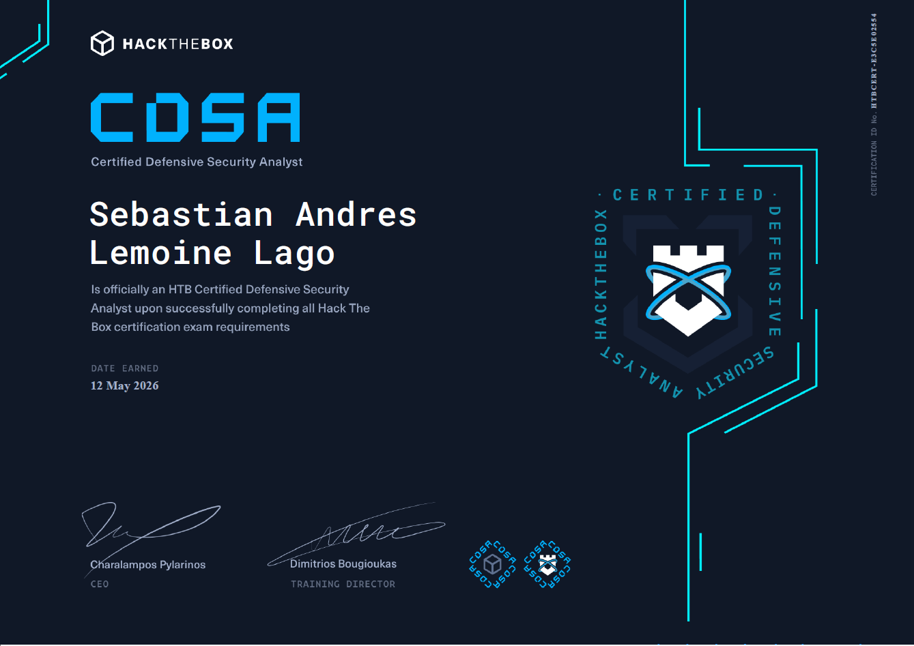

SIEM | Threat Detection | Incident Investigation | Security Operations
Hack The Box Certified Defensive Security Analyst (CDSA) es una certificación práctica de nivel profesional orientada a validar competencias en operaciones defensivas y respuesta a incidentes. A través de escenarios realistas, desarrolla habilidades para investigar alertas, analizar registros, identificar actividad maliciosa, realizar Threat Hunting y responder a incidentes utilizando metodologías y herramientas empleadas en Centros de Operaciones de Seguridad (SOC).
La certificación desarrolla competencias directamente aplicables al trabajo de un SOC Analyst, permitiendo monitorear y validar alertas, investigar incidentes, correlacionar eventos de diferentes fuentes, identificar indicadores de compromiso (IoCs), comprender las tácticas, técnicas y procedimientos (TTPs) utilizados por los atacantes y documentar investigaciones siguiendo metodologías utilizadas en equipos Blue Team.
Durante la preparación para la certificación realicé laboratorios prácticos en plataformas como Hack The Box y TryHackMe, complementando el aprendizaje mediante la revisión de documentación técnica, guías especializadas y material enfocado en operaciones defensivas. Los ejercicios desarrollados estuvieron orientados a la investigación de incidentes, análisis de logs, Threat Hunting, detección de actividad maliciosa y respuesta ante incidentes. Estas prácticas permitieron fortalecer una metodología de análisis estructurada, incluyendo la recopilación de evidencias, correlación de eventos, identificación de indicadores de compromiso (IoCs), análisis del comportamiento del atacante y documentación de hallazgos, simulando escenarios similares a los enfrentados por un analista dentro de un Security Operations Center (SOC).

Certificación oficial obtenida como parte del desarrollo profesional en ciberseguridad.
La preparación para el CDSA representó uno de los mayores avances en mi formación como analista de ciberseguridad. Los escenarios prácticos me permitieron desarrollar una metodología sólida para investigar incidentes, correlacionar evidencias y comprender el ciclo completo de detección y respuesta dentro de un SOC. Esta certificación fortaleció mi capacidad de análisis, mi pensamiento crítico y mi habilidad para enfrentar investigaciones defensivas basadas en situaciones similares a las encontradas en entornos reales.